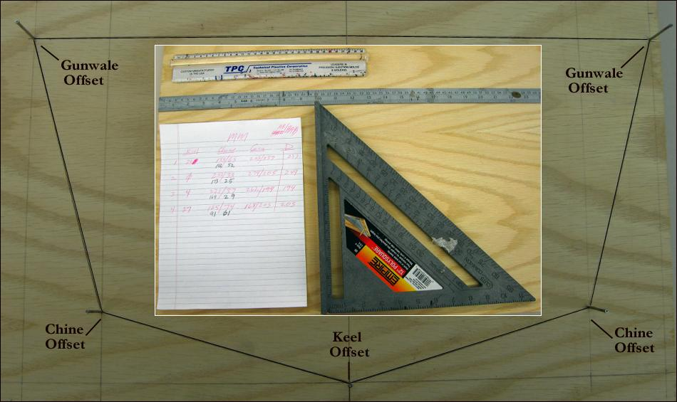

| Cross Sections | Menu Previous Page Next Page |
|

Mark out the offsets directly onto the ply sheet using an Imperial or metric ruler and a square / T-square. The offset points represent the outer edges of the cross section and are the starting point for attaching the stringers. Small finishing nails at the offsets make it easier to mark and draw lines between the offset points.
|
|